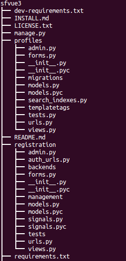
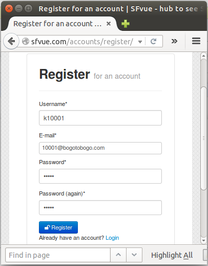

1. Introduction: sfvue.com site sample with virtualenv and Apache

In this chapter, we'll have a Django production app running on Apache utilizing virtualenv.
The code is available from Github repository: sfvue and updated repository https://github.com/SFvue/sfvue3.git
We'll start from implementing basic features. It's running on Linode VPS and the final page will look like this:

We'll start on local, and once we finish the home page, we'll deploy it to production server.
The source files are under /var/www/django:
Note that we are using virtualenv and the steps are described in the
The following is from INSALL.mb, and we can see how it works:
-
#Installation Instructions
*Make sure you have Python 2.7.6, virtualenv, pip and sqlite3/mysql installed*
- Download or clone this repo.
- Go to project home folder and run these commands:
virtualenv venv source venv/bin/activate
- This will create a virtual environment and activate it.
Now use pip to install dependencies with:
pip install -r dev-requirements.txt
- Now we have to prepare a database:
Django = 1.6python manage.py syncdb
Django 1.7, 1.8, 1.9python manage.py makemigrations (if any changes in model) python manage.py migrate --fake-initial
- It will ask us to provide username, email and password.
- Run django server (dev only)
python manage.py runserver
- Dev : Go to [http://127.0.0.1:8000/admin/](http://127.0.0.1:8000/admin/)
- (note) Secret infomation such as SECRET_KEY is in sfvue/local_settings.py, and this should not be committed.
For production, we can skip the step 6 which is to run django server. We'll use Apache. So, after migrate, we can just restart the apache server:
(venv)[sfvue@sf sfvue]$ sudo apachectl restart
Also, in production, instead of localhost, we want to use sfvue.com for our production which is hosted in VPS.
Our basic settings (sfvue/settings.py) looks like this:
"""
Django settings for sfvue project.
For more information on this file, see
https://docs.djangoproject.com/en/1.6/topics/settings/
For the full list of settings and their values, see
https://docs.djangoproject.com/en/1.6/ref/settings/
"""
# Build paths inside the project like this: os.path.join(BASE_DIR, ...)
import os
BASE_DIR = os.path.dirname(os.path.dirname(__file__))
ALLOWED_HOSTS = []
# Application definition
INSTALLED_APPS = (
'django.contrib.admin',
'django.contrib.auth',
'django.contrib.contenttypes',
'django.contrib.sessions',
'django.contrib.messages',
'django.contrib.staticfiles',
)
MIDDLEWARE_CLASSES = (
'django.contrib.sessions.middleware.SessionMiddleware',
'django.middleware.common.CommonMiddleware',
'django.middleware.csrf.CsrfViewMiddleware',
'django.contrib.auth.middleware.AuthenticationMiddleware',
'django.contrib.messages.middleware.MessageMiddleware',
'django.middleware.clickjacking.XFrameOptionsMiddleware',
)
ROOT_URLCONF = 'sfvue.urls'
WSGI_APPLICATION = 'sfvue.wsgi.application'
# Internationalization
# https://docs.djangoproject.com/en/1.6/topics/i18n/
LANGUAGE_CODE = 'en-us'
TIME_ZONE = 'UTC'
USE_I18N = True
USE_L10N = True
USE_TZ = True
# Static files (CSS, JavaScript, Images)
# https://docs.djangoproject.com/en/1.8/howto/static-files/
STATIC_URL = '/static/'
#Import Local and Prod settings
try:
from local_settings import *
except ImportError:
pass
try:
from prod_settings import *
except ImportError:
pass
We haven't modified url file (sfvue/url.py) yet:
from django.conf.urls import patterns, include, url
from django.contrib import admin
admin.autodiscover()
urlpatterns = patterns('',
# Examples:
# url(r'^$', 'sfvue.views.home', name='home'),
# url(r'^blog/', include('blog.urls')),
url(r'^admin/', include(admin.site.urls)),
)
Let's make an app called sfview:
python manage.py startapp sfview

Here is our modified sfvue/urls.py file:
from django.conf.urls import patterns, include, url
from django.contrib import admin
admin.autodiscover()
urlpatterns = patterns('',
# Examples:
# url(r'^$', 'sfvue.views.home', name='home'),
# url(r'^blog/', include('blog.urls')),
url(r'^admin/', include(admin.site.urls)),
url(r'^$', 'sfview.views.index'),
)
sfview/views.py file:
from django.shortcuts import render_to_response
def index(request):
return render_to_response('index.html')
The render_to_response(template_name) renders a given template and returns an HttpResponse object with that rendered text.
We need a directory called templates under our app sfview folder, and index.html.
{% extends "base.html" %}
{% block content %}
...
{% endblock %}
Our project's TEMPLATES setting describes how Django will load and render templates. The default settings file configures a DjangoTemplates backend whose APP_DIRS option is set to True.
sfvue/settings.py:
TEMPLATES = [
{
'BACKEND': 'django.template.backends.django.DjangoTemplates',
'DIRS': [],
'APP_DIRS': True,
'OPTIONS': {
'context_processors': [
'django.template.context_processors.debug',
'django.template.context_processors.request',
'django.contrib.auth.context_processors.auth',
'django.contrib.messages.context_processors.messages',
],
},
},
]
By convention DjangoTemplates looks for a templates subdirectory in each of the INSTALLED_APPS.
In the previous, we dealt with basic skeleton files provided by Django. Actually, we have the following file structure in our production server:

The files are available from sfvue3
We put sensitive information into sfvue/local_settings.py and not committed to Github.
/var/www/django/sfvue/local_settings.py:
...
EMAIL_BACKEND = 'django.core.mail.backends.dummy.EmailBackend'
ALLOWED_HOSTS = ['127.0.0.1']
# sqlite
"""
DATABASES = {
'default': {
'ENGINE': 'django.db.backends.sqlite3', # Add 'postgresql_psycopg2', 'mysql', 'sqlite3' or 'oracle'.
'NAME': 'sfvue.db', # Or path to database file if using sqlite3.
'USER': '', # Not used with sqlite3.
'PASSWORD': '', # Not used with sqlite3.
'HOST': '', # Set to empty string for localhost. Not used with sqlite3.
'PORT': '', # Set to empty string for default. Not used with sqlite3.
}
}
"""
# mysql
DATABASES = {
'default': {
'ENGINE': 'django.db.backends.mysql', # Add 'postgresql_psycopg2', 'mysql', 'sqlite3' or 'oracle'.
'NAME': 'sfvuedb',
'USER': 'sfvue', # Not used with sqlite3.
'PASSWORD': 'password', # Not used with sqlite3.
'HOST': '', # Set to empty string for localhost. Not used with sqlite3.
'PORT': '', # Set to empty string for default. Not used with sqlite3.
}
}
SITE_ID = 1 # example.com (default)
#SITE_ID = 2 # sfvue.com
#SITE_ID = 3 # localhost:8000
EMAIL_HOST = 'smtp.gmail.com'
EMAIL_HOST_USER = 'kihyuck.hong@gmail.com'
EMAIL_HOST_PASSWORD = 'password'
EMAIL_PORT = 587
EMAIL_USE_TLS = True
DEFAULT_FROM_EMAIL = 'kihyuck.hong@gmail.com'
SECRET_KEY = 'mykey'
At this point, the home page, Django admin, phpmyadmin on local look like this:
In production, we may want to access MySQL on our server from our local machine. To do that, we setup ssh tunnel first:
$ ssh -L 9001:localhost:80 -l sfvue 45.79.90.218
Our production code uses Apache rather than the server for dev. So, we need to configure Apache server.
Here is our configuration (/etc/httpd/conf.d/sfvue.com.conf):
<VirtualHost *:80>
ServerAdmin webmaster@sfvue.com
ServerName sfvue.com
ErrorLog /var/www/sfvue.com/logs/error.log
CustomLog /var/www/sfvue.com/logs/access.log combined
WSGIDaemonProcess sfvue3 python-path=/var/www/django/sfvue3:/var/www/django/sfvue3/venv/lib/python2.7/site-packages
WSGIProcessGroup sfvue3
WSGIScriptAlias / /var/www/django/sfvue3/sfvue/wsgi.py
Alias /static/ /var/www/django/sfvue3/static/
</VirtualHost>
<Directory />
Options Indexes FollowSymLinks
AllowOverride None
Require all granted
</Directory>
WSGIPythonPath /var/www/django/sfvue3/
<Directory "/var/www/django/sfvue3/sfvue">
<Files wsgi.py>
Require all granted
</Files>
</Directory>
Basically, that's it.
No DocumentRoot needed thanks to wsgi!
Note that we set a new python-path for our virtualenv.
Let's let's look the configuration more closely.
The WSGIScriptAlias directive tells Apache that for this VirtualHost, all requests below / should be handled by the WSGI script specified. In other words, it tells Apache and mod_wsgi where to find WSGI configuration. The wsgi.py supplied by Django contains the barebone default configuration for WSGI for serving Django application that works just fine.
The first bit in the WSGIScriptAlias line is the base URL path we want to serve our application at (/ indicates the root url), and the second is the location of a "WSGI file" on our system, usually inside of our project package (sfvue3 in this example).
The WSGIPythonPath line ensures that our project package is available for import on the Python path. In other words, it ensures that import sfvue3 works.
The last <Directory> piece just ensures that Apache can access our wsgi.py file.
In the previous section, we used /etc/httpd/conf.d/sfvue.com.conf to configure Apache, however, we can mimic the setup used in Debian. In other words, we may want to utilize two directories: sites-avaialble and sites-enabled.
Actually, this is the way we setup Apache for sfvue.com.
First, we should let Apache know where it supposed to look for any conf file. We set it in /etc/httpd/conf/httpd.conf, and added the last line:
... # Supplemental configuration # # Load config files in the "/etc/apache2/conf.d" directory, if any. IncludeOptional conf.d/*.conf IncludeOptional sites-enabled/*.conf
Then, we moved the /etc/httpd/conf.d/sfvue.com to /etc/httpd/sites-available.
Next thing to do is set a link:
$ sudo ln -s /etc/httpd/sites-available/sfvue.com.conf /etc/httpd/sites-enabled/sfvue.com.conf
The last one is to restart the Apache server:
$ sudo apachectl restart
(venv)[sfvue@sf sfvue3]$ python manage.py syncdb Creating tables ... Creating table auth_permission Creating table auth_group_permissions Creating table auth_group Creating table auth_user_groups Creating table auth_user_user_permissions Creating table auth_user ... Creating table guardian_groupobjectpermission You just installed Django's auth system, which means you don't have any superusers defined. Would you like to create one now? (yes/no): yes Username (leave blank to use 'sfvue'): Email address: contact.sfvue@gmail.com Password: Password (again): Superuser created successfully. Installing custom SQL ... Installing indexes ... Installed 0 object(s) from 0 fixture(s)
Just for book keeping, here is the status of our db:
$ mysql -u root -p Enter password: Welcome to the MariaDB monitor. Commands end with ; or \g. Your MariaDB connection id is 15 Server version: 5.5.41-MariaDB MariaDB Server Copyright (c) 2000, 2014, Oracle, MariaDB Corporation Ab and others. Type 'help;' or '\h' for help. Type '\c' to clear the current input statement. MariaDB [(none)]>
To check the info about our db:
MariaDB [(none)]> show variables where variable_name like "%dir"; +---------------------------+----------------------------+ | Variable_name | Value | +---------------------------+----------------------------+ | aria_sync_log_dir | NEWFILE | | basedir | /usr | | character_sets_dir | /usr/share/mysql/charsets/ | | datadir | /var/lib/mysql/ | | innodb_data_home_dir | | | innodb_log_group_home_dir | ./ | | lc_messages_dir | | | plugin_dir | /usr/lib64/mysql/plugin/ | | slave_load_tmpdir | /var/tmp | | tmpdir | /var/tmp | +---------------------------+----------------------------+ 10 rows in set (0.00 sec)
To see the databases:
MariaDB [(none)]> show databases; +--------------------+ | Database | +--------------------+ | information_schema | | djangotestdb | | mysql | | performance_schema | | sfvuedb | +--------------------+ 5 rows in set (0.00 sec)
To see the list of user account:
MariaDB [(none)]> SELECT User FROM mysql.user; +----------------+ | User | +----------------+ | sfvue | | root | | root | | djangotestuser | | root | +----------------+ 6 rows in set (0.00 sec)
To see Grants for "sfvu" user:
MariaDB [(none)]> SHOW GRANTS FOR 'sfvue'@'%'; +---------------------------------------------------------------------------------------------------------------------------------+ | Grants for sfvue@% | +---------------------------------------------------------------------------------------------------------------------------------+ | GRANT ALL PRIVILEGES ON *.* TO 'sfvue'@'%' IDENTIFIED BY PASSWORD '*BCFAFEFBC6460D554AF6ABAFBACA1F63D87CFE97' WITH GRANT OPTION | +---------------------------------------------------------------------------------------------------------------------------------+ 1 row in set (0.00 sec) MariaDB [(none)]>
To exit, ^D:
MariaDB [(none)]> Bye
To check if MariaDB is running:
$ ps -ef|grep mysql mysql 5320 1 0 21:44 ? 00:00:00 /bin/sh /usr/bin/mysqld_safe --basedir=/usr mysql 5478 5320 2 21:44 ? 00:00:00 /usr/libexec/mysqld --basedir=/usr --datadir=/var/lib/mysql --plugin-dir=/usr/lib64/mysql/plugin --log-error=/var/log/mariadb/mariadb.log --pid-file=/var/run/mariadb/mariadb.pid --socket=/var/lib/mysql/mysql.sock
To stop MySQL:
$ sudo systemctl stop mariadb
We may get "Unable to Open Database File" when using SQLite3.
Several things can cause this error:
- wrong permission/ownership
- wrong path to db in settings.py
- using db name that's not in our database
In this setup, the user name is sfvue, and we added the user to apache group:
$ sudo usermod -a -G apache sfvue
The permissions for files and directories are look like this:
/var/www/django:
drwxr-xr-x 6 sfvue root 4096 Dec 19 15:30 django
/var/www/django/sfvue3:
drwxr-xr-x 11 sfvue wheel 4096 Dec 19 21:31 sfvue3
/var/www/django/sfvue3/sfvue:
drwxr-xr-x 11 sfvue wheel 4096 Dec 19 21:31 . drwxr-xr-x 6 sfvue root 4096 Dec 19 15:30 .. -rw-r--r-- 1 sfvue wheel 579 Dec 19 15:30 dev-requirements.txt drwxr-xr-x 8 sfvue wheel 4096 Dec 19 20:44 .git -rw-r--r-- 1 sfvue wheel 51 Dec 19 15:30 .gitignore -rw-r--r-- 1 sfvue wheel 36 Dec 19 15:30 gunicorn-example.conf.py -rw-r--r-- 1 sfvue wheel 1144 Dec 19 16:51 INSTALL.md -rw-r--r-- 1 sfvue wheel 1054 Dec 19 15:30 LICENSE.txt -rwxr-xr-x 1 sfvue wheel 248 Dec 19 15:30 manage.py -rw-r--r-- 1 sfvue wheel 23 Dec 19 15:30 MyNote.txt -rw-r--r-- 1 sfvue wheel 815 Dec 19 15:30 MyQuery drwxr-xr-x 4 sfvue wheel 4096 Dec 19 16:53 profiles -rw-r--r-- 1 sfvue wheel 1603 Dec 19 15:30 README.md drwxr-xr-x 5 sfvue wheel 4096 Dec 19 16:53 registration -rw-r--r-- 1 sfvue wheel 441 Dec 19 15:30 requirements.txt drwxr-xr-x 4 sfvue wheel 4096 Dec 19 16:53 resources drwxr-xr-x 2 sfvue wheel 4096 Dec 19 21:37 sfvue drwxr-xr-x 7 sfvue wheel 4096 Dec 19 15:30 static drwxr-xr-x 11 sfvue wheel 4096 Dec 19 15:30 templates drwxr-xr-x 2 sfvue wheel 4096 Dec 19 15:30 tracks drwxr-xr-x 8 sfvue wheel 4096 Dec 19 16:38 venv
We may get the following error while we try /manage or User Register:
Getting Site Matching Query Does Not Exist Error after creating django admin
As we can see from the message, the Site object for our Django project is missing. Each Django project has a Site object which contains the site's name and domain. It is usually automatically created when creating a Django project (in particular, when the syncdb command runs) but that's not in our case.
Open the Django shell for your site (python manage.py shell):
>>> from django.contrib.sites.models import Site >>> Site.objects.create(name='sfvue.com', domain='sfvue.com')
If we want to change these values later, we can go to our admin panel (/admin/) and edit the site object in the section django_site.
The following is the user register window.

In our setup, we send an activation email from gmail. A user gets an email like this:
Click the link for email activation.
Now, we have a login session:
We're in!
In our application (sfvue.com), we use manage instead of admin for url:

Note that we need to select a Site, and in our case, it's sfvue.com.
When we click the About in the footer:
we get the following page:
flatpages/default.html:
{% extends "base.html" %}
{% block head_title %}{{ flatpage.title }}{% endblock head_title %}
{% block content %}
{{ flatpage.content }}
{% endblock content %}
Here are other Flatpages created via Admin:

The picture below shows a page which uses uploaded images by the user.
The images are stored in /media/topics/. To serve the images, we need to setup like this in our project url, sfvue/urls.py:
from django.conf.urls import patterns, include, url
from django.contrib import admin
admin.autodiscover()
from django.conf import settings
from resources.models import Resource, Topic
from profiles.models import UserProfile
from django.views.generic import RedirectView
from .views import *
from profiles.views import UserUpdateView, UserProfileUpdateView
from .sitemaps import sitemaps
urlpatterns = patterns('',
url(r'^$', HomeView.as_view(), name='page_home'),
url(r'^explore/$', explore_home, name='explore_home'),
url(r'^admin/$', RedirectView.as_view(url='/', permanent=True)),
url(r'^explore/resource/all/$', RecentResourceListView.as_view(), name='explore_recent_resources'),
url(r'^explore/domain/all/$', PopularDomainListView.as_view(), name='explore_all_domains'),
url(r'^explore/topic/all/$', PopularTopicListView.as_view(), name='explore_all_topics'),
url(r'^accounts/settings/core/$', UserUpdateView.as_view(), name='user_update'),
url(r'^accounts/settings/info/$', UserProfileUpdateView.as_view(), name='userprofile_update'),
)
urlpatterns += patterns('',
url(r'^manage/', include(admin.site.urls)),
url(r'^accounts/', include('registration.backends.default.urls')),
url(r'^resource/', include('resources.urls')),
url(r'^profile/', include('profiles.urls')),
url(r'^search/', include('haystack.urls')),
url(r'^media/(?P<path>.*)$', 'django.views.static.serve', {
'document_root': settings.MEDIA_ROOT,
}),
)
urlpatterns += patterns('',
(r'^sitemap\.xml$', 'django.contrib.sitemaps.views.sitemap', {'sitemaps': sitemaps}),
)
urlpatterns += patterns('django.contrib.flatpages.views',
url(r'^about/$', 'flatpage', {'url': '/about/'}, name='page_about'),
url(r'^contact/$', 'flatpage', {'url': '/contact/'}, name='page_contact'),
url(r'^guidelines/$', 'flatpage', {'url': '/guidelines/'}, name='page_guidelines'),
url(r'^license/$', 'flatpage', {'url': '/license/'}, name='page_license'),
)
Note that the MEDIA_URL is defined as /media/.
We may get "Access denied" due to the permissions on the /media directory. To fix this:
$ sudo chown apache:apache media
We're running Apache on CentOS 7.
On Ubuntu, the Apache user name is www-data. If we want to make sure which user name the Apache is using, we can use 'egrep' command like this.
On CentOS:
$ ps aux | egrep '(apache*|httpd)' root 19349 0.0 2.5 414648 25488 ? Ss 15:23 0:00 /usr/sbin/httpd -DFOREGROUND apache 19351 0.0 5.6 884440 57032 ? Sl 15:23 0:01 /usr/sbin/httpd -DFOREGROUND ...
On Ubuntu:
$ ps aux | egrep '(apache*|httpd)' root 5162 0.0 0.0 388048 700 ? Ss 09:14 0:01 /usr/sbin/apache2 -k start www-data 5166 0.0 0.0 388072 124 ? S 09:14 0:00 /usr/sbin/apache2 -k start ...
If we hit "Reset" button in Login session, we get the following page:
Press the "Reset", and then click the link from the password reset email:

Now, we can set a new password:
How it works?
Let's start from project url, sfvue/urls.py:
from profiles.views import UserUpdateView, UserProfileUpdateView
from .sitemaps import sitemaps
urlpatterns = patterns('',
url(r'^$', HomeView.as_view(), name='page_home'),
url(r'^explore/$', explore_home, name='explore_home'),
url(r'^admin/$', RedirectView.as_view(url='/', permanent=True)),
url(r'^explore/resource/all/$', RecentResourceListView.as_view(), name='explore_recent_resources'),
url(r'^explore/domain/all/$', PopularDomainListView.as_view(), name='explore_all_domains'),
url(r'^explore/topic/all/$', PopularTopicListView.as_view(), name='explore_all_topics'),
url(r'^accounts/settings/core/$', UserUpdateView.as_view(), name='user_update'),
url(r'^accounts/settings/info/$', UserProfileUpdateView.as_view(), name='userprofile_update'),
)
urlpatterns += patterns('',
url(r'^manage/', include(admin.site.urls)),
url(r'^accounts/', include('registration.backends.default.urls')),
url(r'^resource/', include('resources.urls')),
url(r'^profile/', include('profiles.urls')),
url(r'^search/', include('haystack.urls')),
url(r'^media/(?P<path>.*)$', 'django.views.static.serve', {
'document_root': settings.MEDIA_ROOT,
}),
)
urlpatterns += patterns('',
(r'^sitemap\.xml$', 'django.contrib.sitemaps.views.sitemap', {'sitemaps': sitemaps}),
)
urlpatterns += patterns('django.contrib.flatpages.views',
url(r'^about/$', 'flatpage', {'url': '/about/'}, name='page_about'),
url(r'^contact/$', 'flatpage', {'url': '/contact/'}, name='page_contact'),
url(r'^guidelines/$', 'flatpage', {'url': '/guidelines/'}, name='page_guidelines'),
url(r'^license/$', 'flatpage', {'url': '/license/'}, name='page_license'),
)
As we can see from the highlighted url, any url that starts with account is defined in registration.backends.default.urls:
url(r'^accounts/', include('registration.backends.default.urls')),
So, let's see what's in there (registration/backends/default/urls.py):
from django.conf.urls import patterns
from django.conf.urls import include
from django.conf.urls import url
from django.views.generic.base import TemplateView
from registration.backends.default.views import ActivationView
from registration.backends.default.views import RegistrationView
urlpatterns = patterns('',
url(r'^activate/complete/$',
TemplateView.as_view(template_name='registration/activation_complete.html'),
name='registration_activation_complete'),
# Activation keys get matched by \w+ instead of the more specific
# [a-fA-F0-9]{40} because a bad activation key should still get to the view;
# that way it can return a sensible "invalid key" message instead of a
# confusing 404.
url(r'^activate/(?P<activation_key>\w+)/$',
ActivationView.as_view(),
name='registration_activate'),
url(r'^register/$',
RegistrationView.as_view(),
name='registration_register'),
url(r'^register/complete/$',
TemplateView.as_view(template_name='registration/registration_complete.html'),
name='registration_complete'),
# url(r'^register/closed/$',
# TemplateView.as_view(template_name='registration/registration_closed.html'),
# name='registration_disallowed'),
(r'', include('registration.auth_urls')),
)
Now, we need to go to /registration/auth_urls.py, and this is our final urls destination:
from django.conf.urls import include
from django.conf.urls import patterns
from django.conf.urls import url
from django.contrib.auth import views as auth_views
urlpatterns = patterns('',
url(r'^login/$',
auth_views.login,
{'template_name': 'registration/login.html'},
name='auth_login'),
url(r'^logout/$',
auth_views.logout,
{'template_name': 'registration/logout.html'},
name='auth_logout'),
url(r'^password_change/$',
auth_views.password_change,
name='auth_password_change'),
url(r'^password_change/done/$',
auth_views.password_change_done,
name='password_change_done'),
url(r'^password_reset/$',
auth_views.password_reset,
name='auth_password_reset'),
url(r'^password_reset/done/$',
auth_views.password_reset_done,
name='password_reset_done'),
url(r'^reset/(?P<uidb64>[0-9A-Za-z_\-]+)/(?P<token>[0-9A-Za-z]{1,13}-[0-9A-Za-z]{1,20})/$',
auth_views.password_reset_confirm,
name='auth_password_reset_confirm'),
url(r'^reset/done/$',
auth_views.password_reset_complete,
name='password_reset_complete'),
)
Note that DJango provides views via django.contrib.auth.views.
Also, we need some help from templates:
$ ls /var/www/django/sfvue3/templates/registration/ activate.html login.html password_reset_complete.html password_reset_form.html activation_complete.html logout.html password_reset_confirm.html registration_base.html activation_email_subject.txt password_change_done.html password_reset_done.html registration_complete.html activation_email.txt password_change_form.html password_reset_email.html registration_form.html
Now we have the initial setup for our site. But we still have lots of things to be done.
- Upgrading packages including Django. Currently, we're using Django 1.6, and some of the packages are obsolete or no longer supported in latest version (Django 1.8/1.9).
For upgrading to Django 1.8, please visit 2. Upgrading to Django 1.8.7 sfvue.com site sample with virtualenv and Apache - (Note) The SECRET_KEY has been moved to local_settings.py along with other sensitive data.
Ph.D. / Golden Gate Ave, San Francisco / Seoul National Univ / Carnegie Mellon / UC Berkeley / DevOps / Deep Learning / Visualization